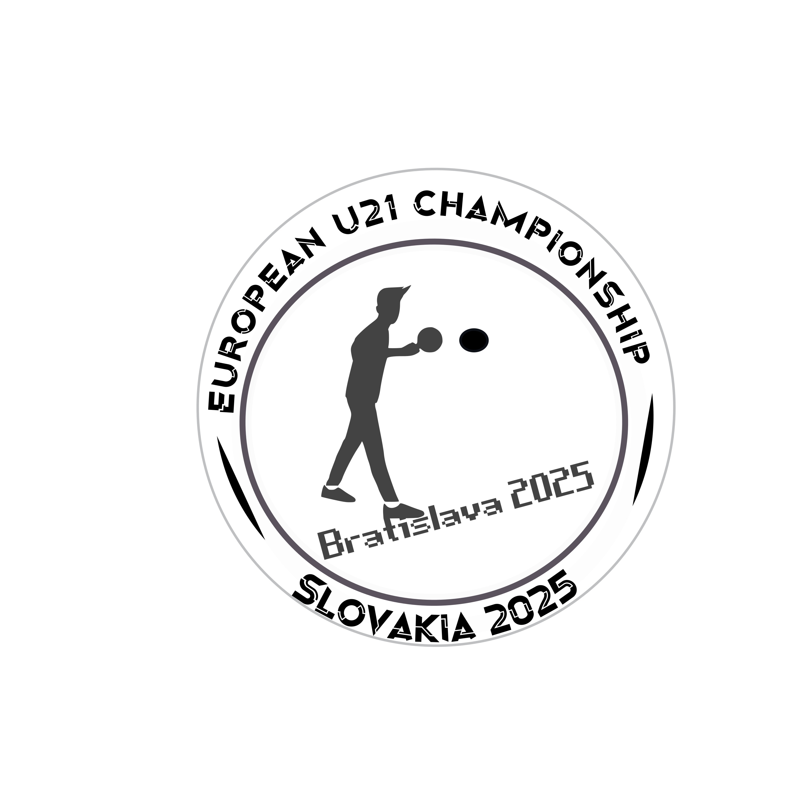
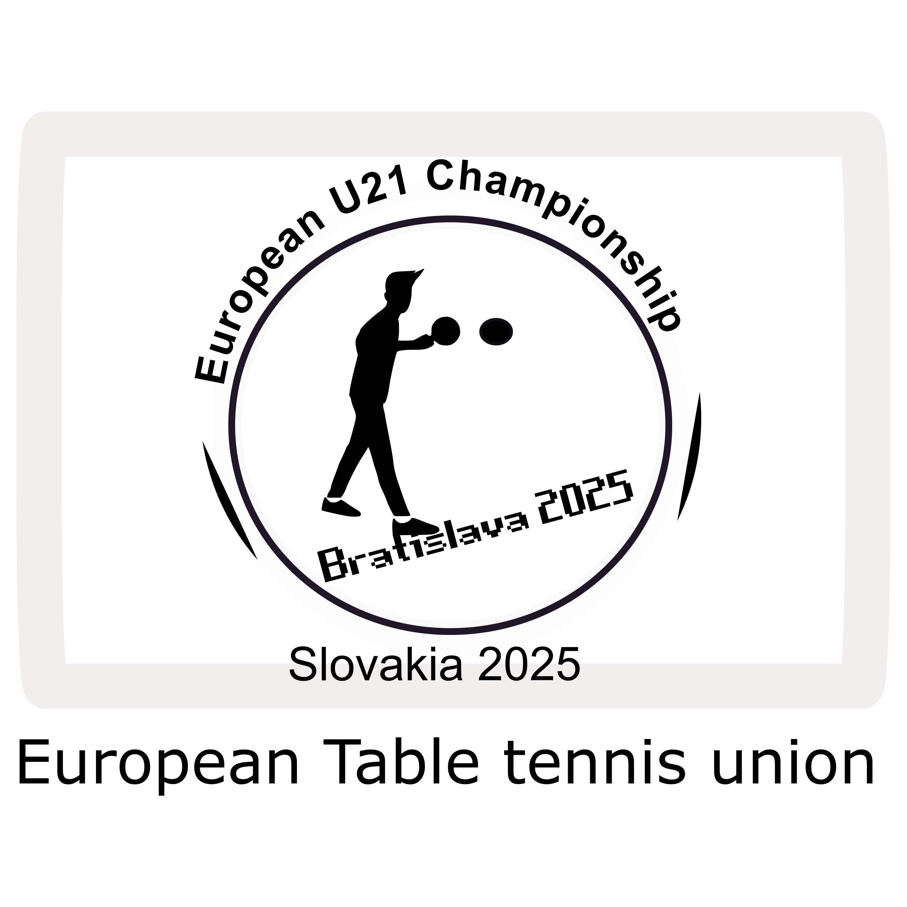
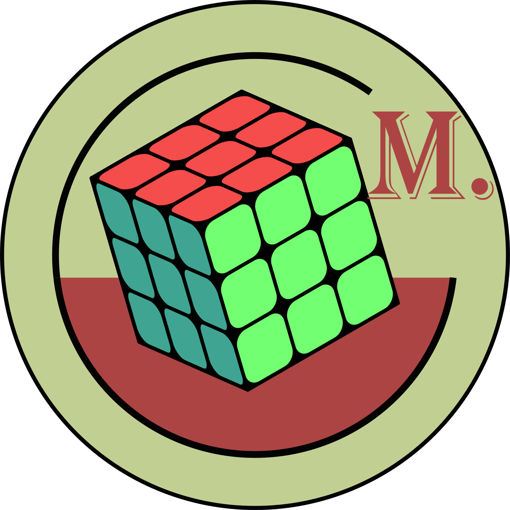
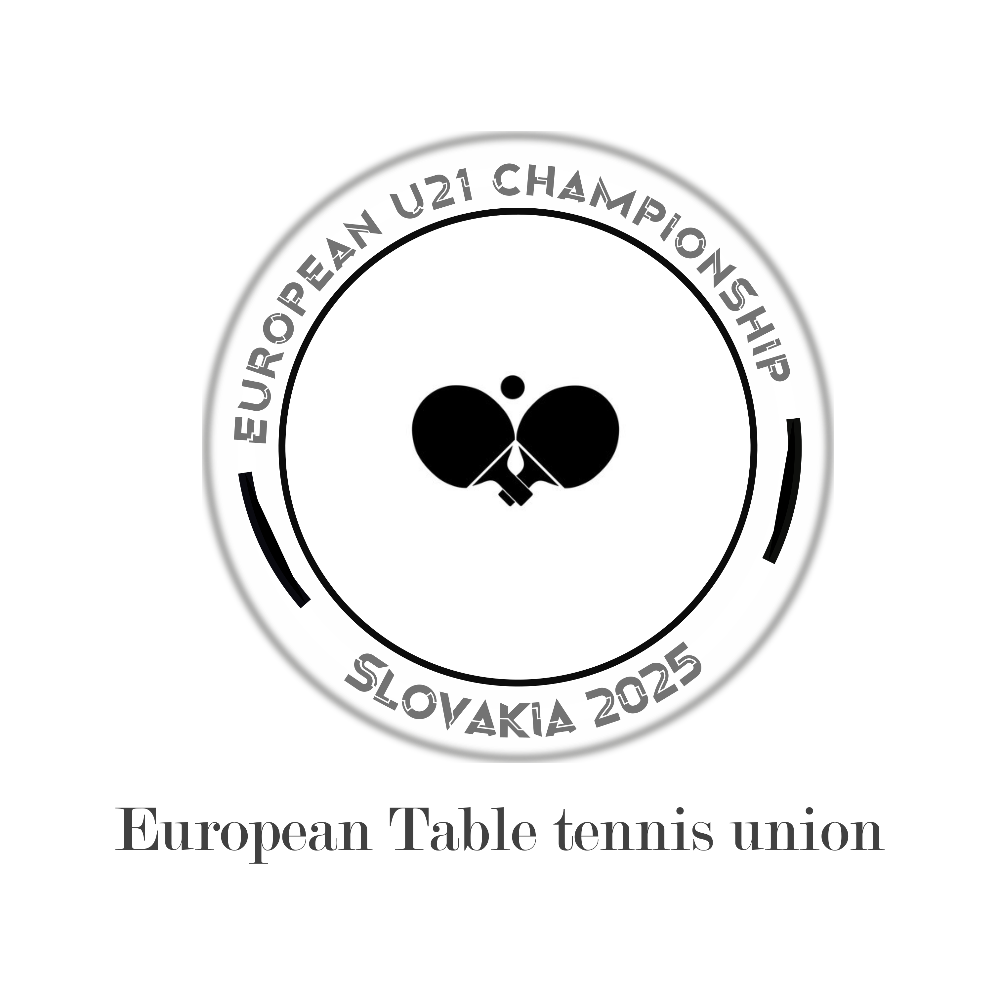

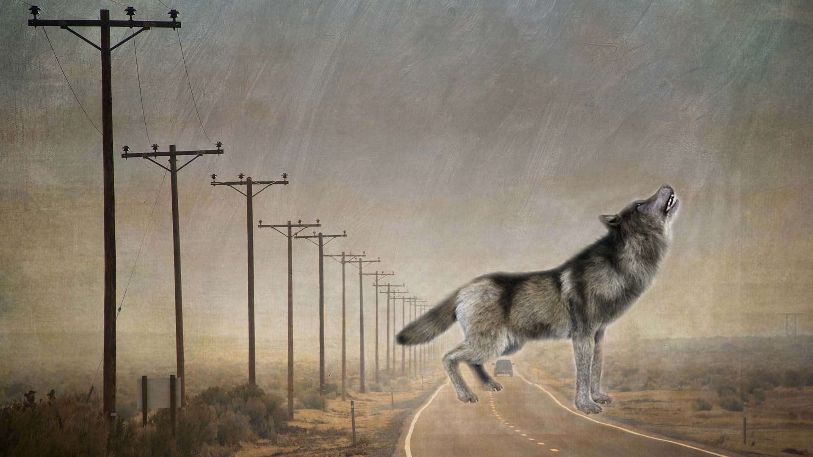

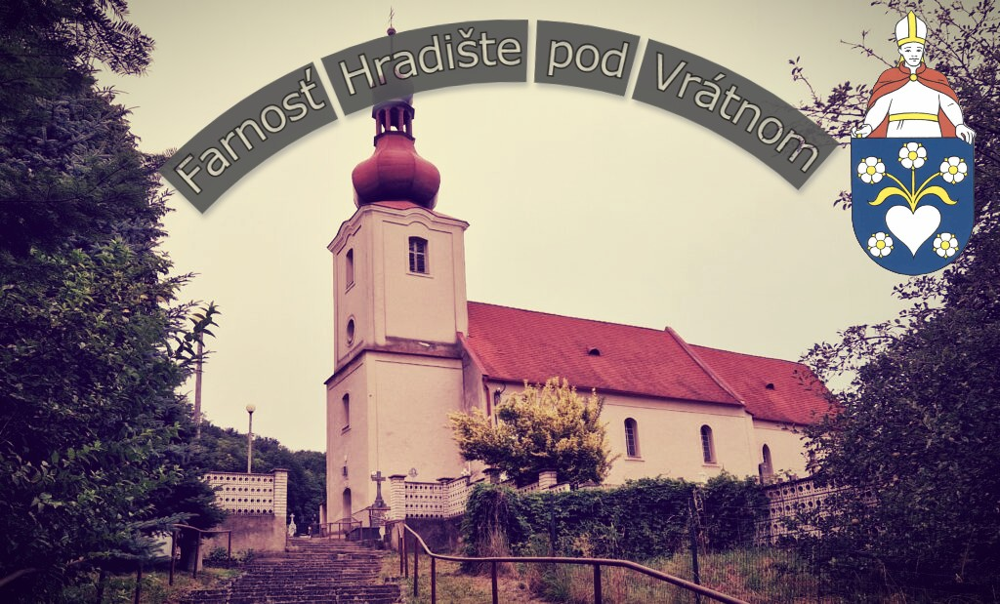
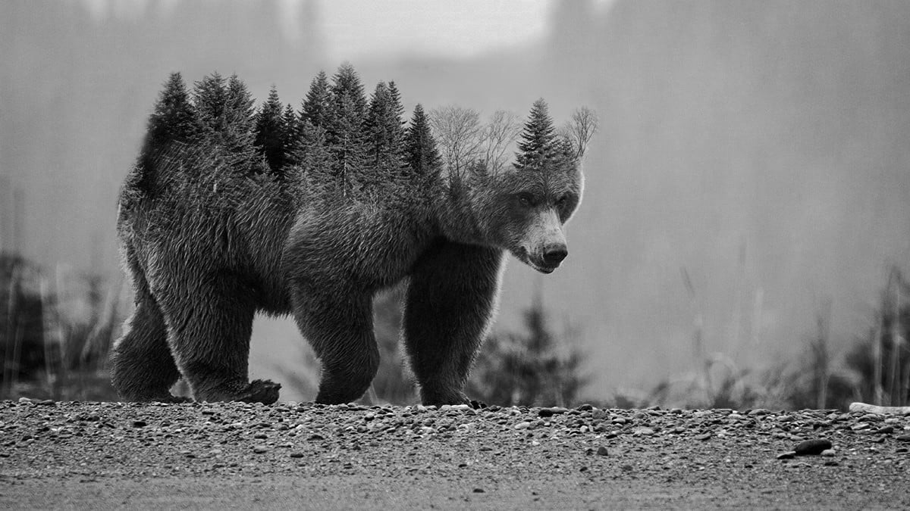
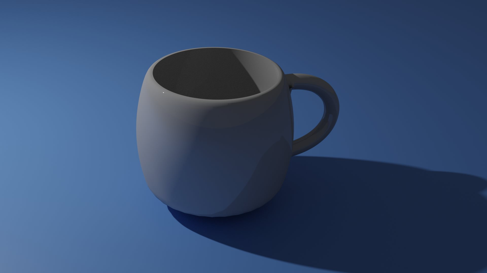
Dovoľte aby som sa Vám predstavil som Marek Hanic som absolventom strednej školy v oblasti informatiky presnejšie odboru informačné systémy a služby.
Som flexibilný a adaptabilný človek, ktorý sa rýchlo prispôsobí novým situáciám a dokáže efektívne pracovať aj pod tlakom. Rád spolupracujem s ľuďmi, komunikujem otvorene a profesionálne, a nebránim sa novým výzvam. Som spoľahlivý a motivovaný neustále rozvíjať svoje zručnosti a prispievať k úspechu tímu. Rád komunikujem a spolupracujem s ľuďmi, učím sa nové zručnosti a hľadám príležitosti, kde môžem prispieť svojou kreativitou a technickými schopnosťami. Moje skúsenosti zahŕňajú prácu s programovaním, grafikou, tvorbou webových stránok aj digitálnym dizajnom.
V portfóliu prezentujem svoje školské aj osobné projekty.


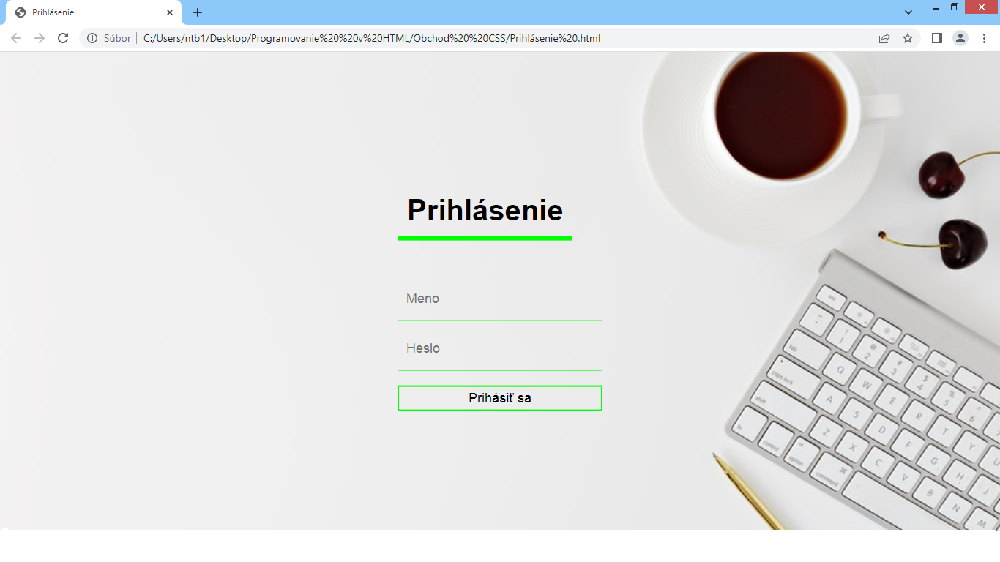
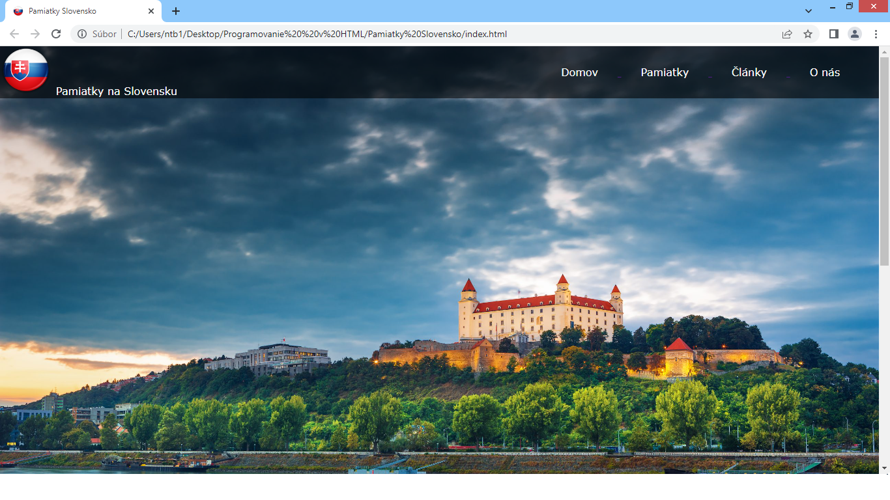
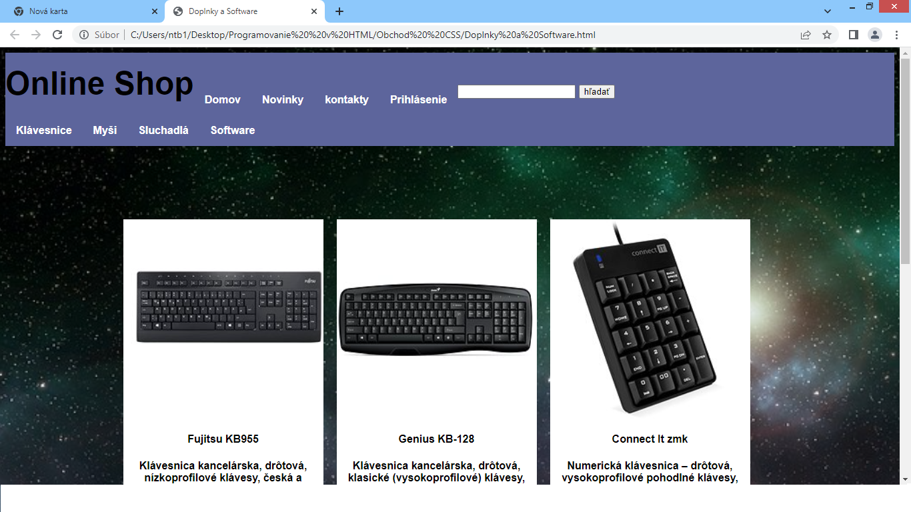
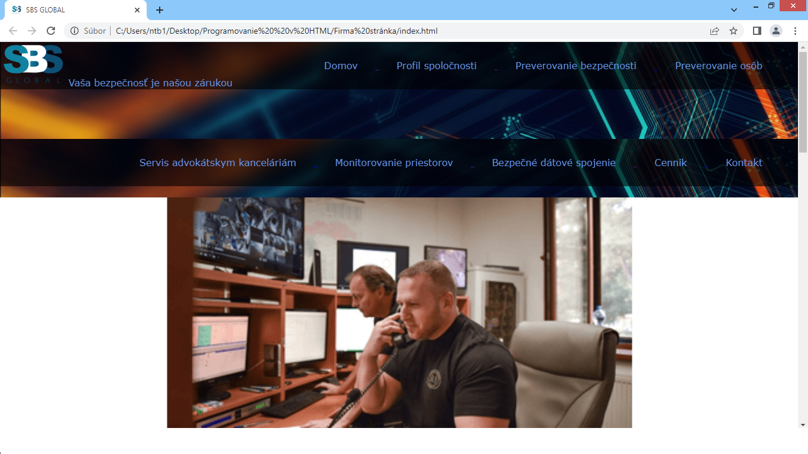
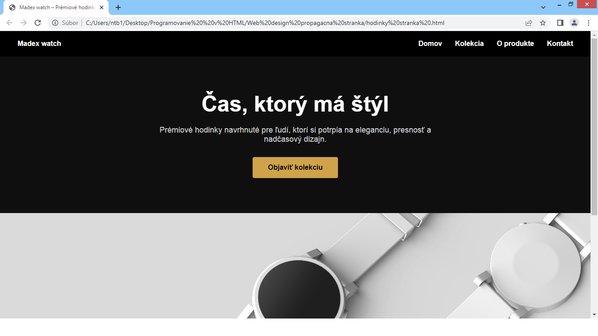
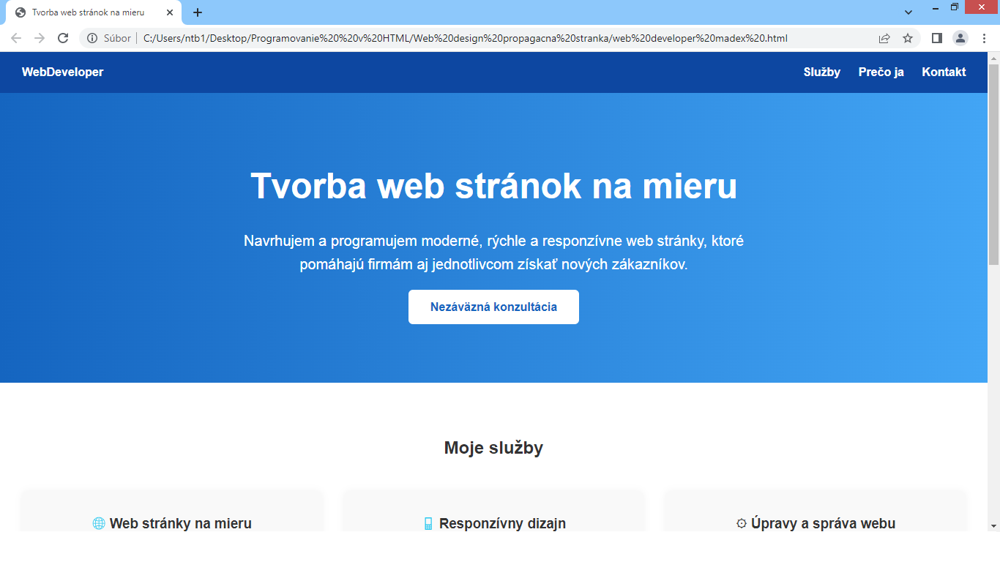
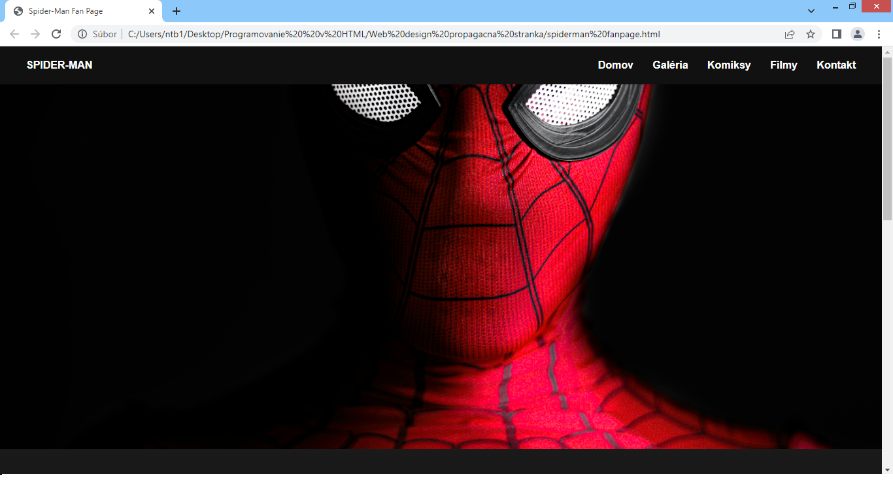
Túto webovú stránku – moje portfólio – som vytváral úplne sám, od návrhu po implementáciu, aby som prezentoval svoje projekty a zručnosti.
Ďalej sa vo voľnom čase venujem aj :